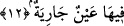

11. Orada boş bir söz işitmezsin.
“Orada” bu yüksek Cennette “boş bir söz işitmezler.” Bu hitap âyete muhatap olan
ve böylesi bir hitabı almaya lâyık olan herkesedir.
Âyetteki “la tesmeû” kelimesini “o yüzler işitmezler” şeklinde anlamak da
mümkündür. Bu takdirde fiilin içerisindeki “ta” kelimesi hitap tâ’sı değil müenneslik
tâ’sı olmuş olur.
“Boş söz”den maksad itibar edilmeye, kale alınmaya değmeyen söz demektir. Boş söz
anlamına gelen bu “lâğıye” kelimesi tıpkı “âfiyet” kelimesi gibi masdardır. Bu kelimeyi
“zatu lağvin” şeklinde alarak boş söz olarak anlamak mümkün olduğu gibi kelimeyi ism-
i fâil olarak kabul edip ifâdeden hazfedilmiş bir kelimenin sıfatı olarak kabul edip şu
şekilde mânâ vermek de mümkündür: Orada boş şeyler konuşan hiçbir nefis işitmezsin.
Çünkü Cennet halkının ağızlarından çıkan bütün sözler zikirdir, hikmetli sözlerdir. Zira
mü’min Cennete kalp ve ruh mertebesinden geçerek girer. Nefis ve tabiat ateşe atılır.
Kalbin ve ruhun şânı ise zikirden ibarettir. Tıpkı nefsin ve tabiatın şânının boş şeylerle
meşgul olmaktan ibaret olması gibi. Sûrî Cennette nasıl boş sözler işitilmezse
dünyadaki manevi Cennette de aynı şekilde boş sözlere yer yoktur. Çünkü dünyanın
manevi cennetinde bulunanlar zikre ve Hakk’ın hitabını dinlemeye dalıp gitmişlerdir.
Bundan dolayı onların meclislerinde sâdece rabbani mârifet ve rahmânî hikmetler dile
getirilir. Efendimiz bir hadis-i şerifte şöyle buyurmuştur: “Cennet halkı orada yiyip
içerler, idrar yapmazlar, büyük abdeste çıkmazlar, burunlarını sümkürmezler.” Bunu
duyan sahabeler Peygamber (s.a.)’e sorarlar: “O halde yedikleri yemekler ne olur.”
Peygamber (s.a.) şöyle cevap verir: Misk sızıntısı gibi bir sızıntı ve ter düşünün işte
yemekler vücuttan o şekilde atılır. cennetliklere Allah’ı tesbih etmeleri ve O’na
hamdetmeleri ilham edilir. Tıpkı nefes alıp vermeleri ilham edildiği gibi.” [85]
Dünyaya ve dünya insanlarının toplantı yerlerine gelince buralar boş sözlerden hali
değildir. Bundan dolayı Peygamber (s.a.) Efendimiz şöyle buyurmuşlardır: “Her kim
bir yerde oturur da orada lağvı çok yaparsa (yâni çirkin sözü çok konuşur, gürültü
çıkarıp anlaşılmayan çeşitli sesler çıkarırsa) bunun ardından o toplantı dağılmadan
“subhaneke allahumme ve bi hamdike eşhedu enla ilahe illa ente estağfiruke ve
etûbu ileyke/Seni tesbih ederim ey Allah’ım ve sana hamdederim. Ben şehâdet ederim
ki senden başka hiçbir ilah yoktur. Senden bağışlamanı dilerim ve sana tevbe
ederim” derse o toplantıda işlemiş olduğu şeyler gıybet etmek gibi kul hakkıyla ilgili
değilse bağışlanır.” [86]
12. Orada (Cennette) devamlı akan bir pınar,
Pınar anlamındaki ayn kelimesinin sonundaki tenvin çokluk ifâde eder. O zaman âyetin